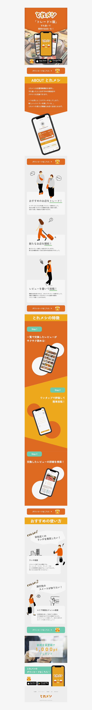

トレめし
Web site
Xd illustrator
2023 08
『「トレード×メシ」飲食店のクチコミアプリ
（グループ制作）』
ターゲットは20代後半から30代の社会人。
会社付近の飲食店情報を知りたい時、出張先での未知なる食との出会いがほしい時等、「食」とのマッチングアプリを目指し制作。
使用方法等をイラストと共に忙しい社会人が瞬時にイメージできるよう、見やすさや理解のしやすさを心がけました。
食欲をかき立てるビタミンカラーのオレンジを基調とし、反対色である青みがかったグリーンをアクセントカラーとして使用。
LPのコンバーション率を鑑み、LP最後のリンクボタンは緑に設定しました。
